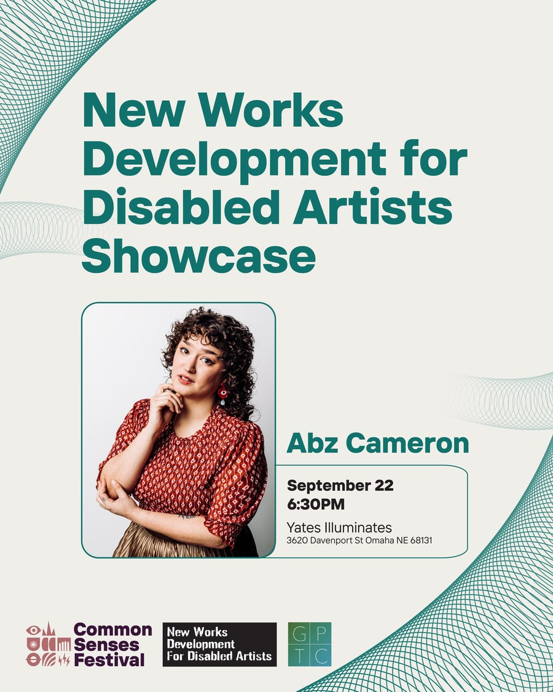
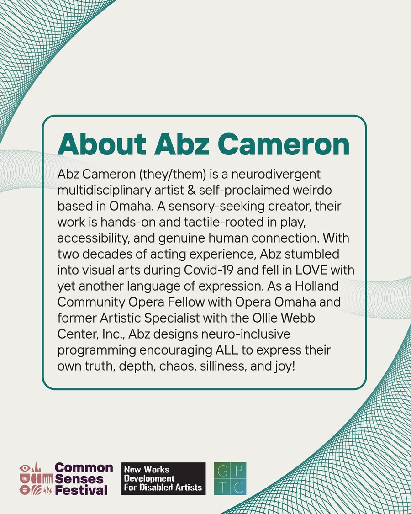
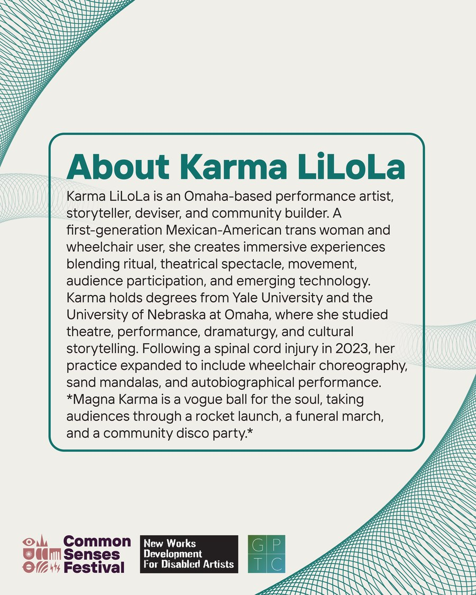
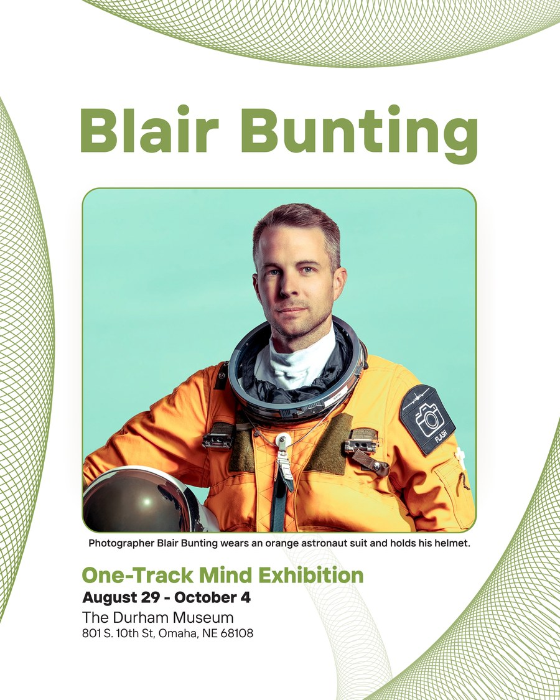
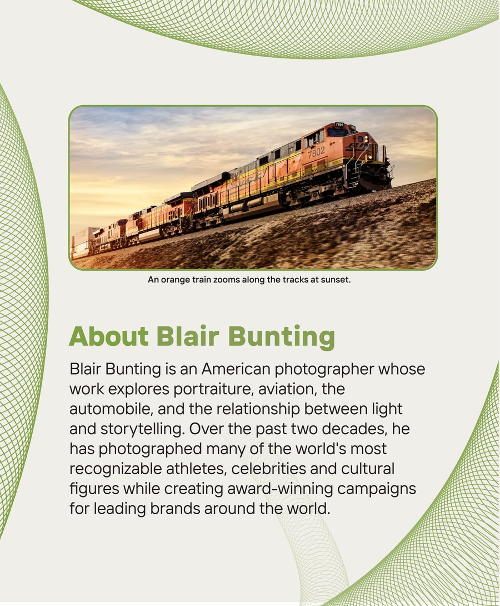
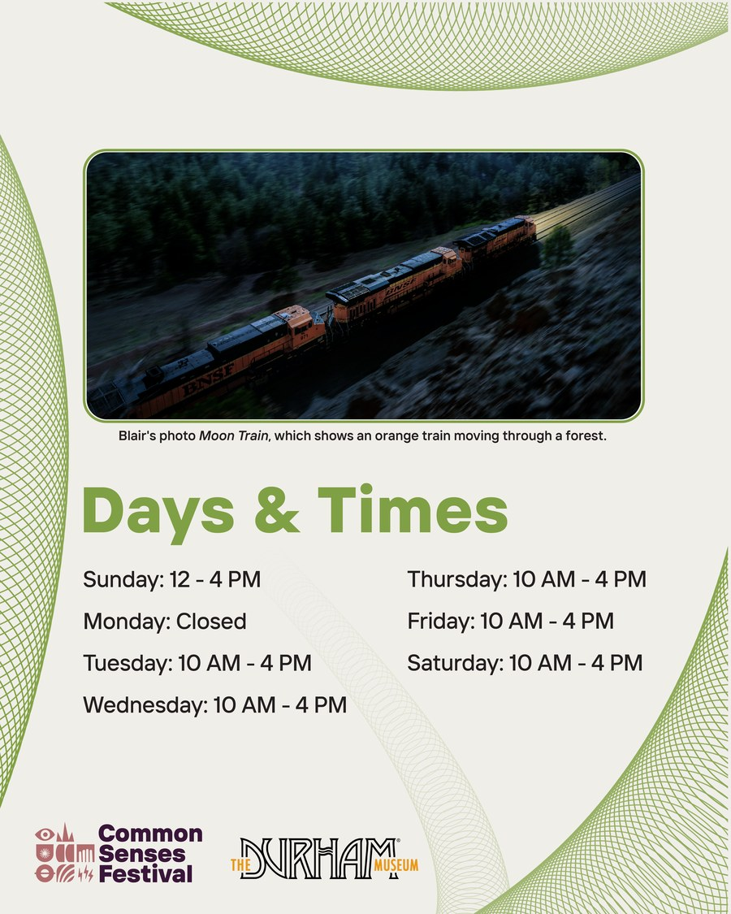

Common Senses
Festival

A festival about access, announced in the medium that handles access worst.
Common Senses runs two weeks in Omaha — September 13 to 27 — around arts, science and disability acceptance, under the 2026 theme We All Move Together. The programme it has to announce runs from a museum photography exhibition to a new-works showcase, and most of that announcing happens one square at a time in somebody's feed.
The audience this festival exists for is the audience social platforms serve worst. A post that only communicates as a picture leaves out the people it was made to reach, and an alt-text field left blank is the most common way that happens.
One template, set once and run across the season. A guilloché wave holds the corners on every post, the programme strand sets the colour, and the description of each photograph is set into the artwork itself rather than left to a field somebody has to remember to fill.
2
Programme strands on one template, separated by colour alone.
The pairs
Every artist goes out as two posts: the announcement, then the biography. They run back to back in the feed, so the second has to look like the first without repeating it.


The other strand
The museum exhibition takes the same template in green, and carries a second partner lockup in the footer without the layout giving way.



A template is only worth having if it survives the boring posts. Opening hours and a venue address are what most systems quietly stop applying to, and they are exactly the posts somebody needs to be able to read.